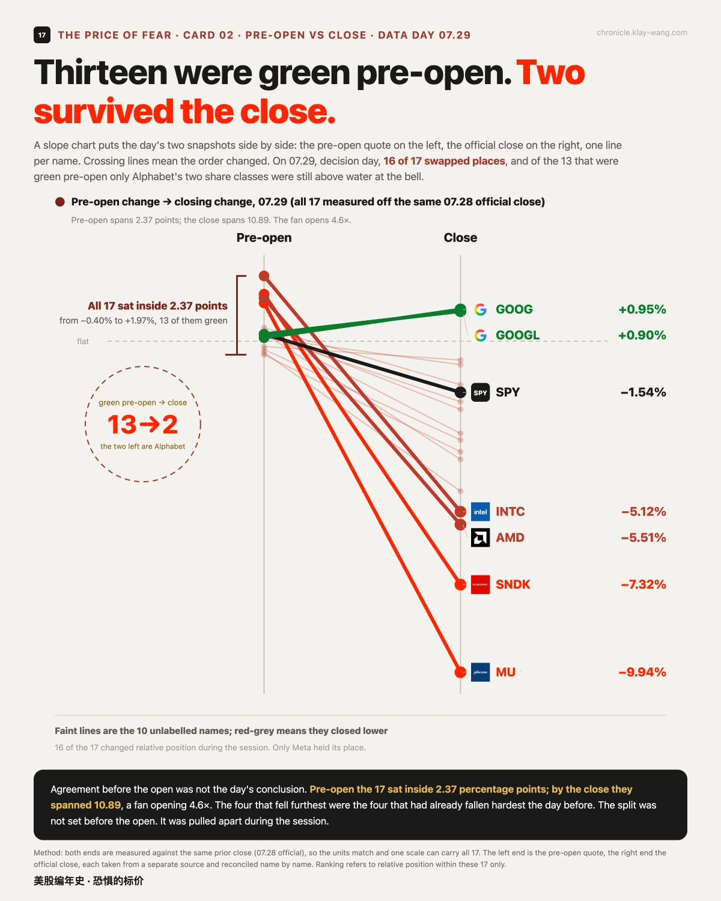
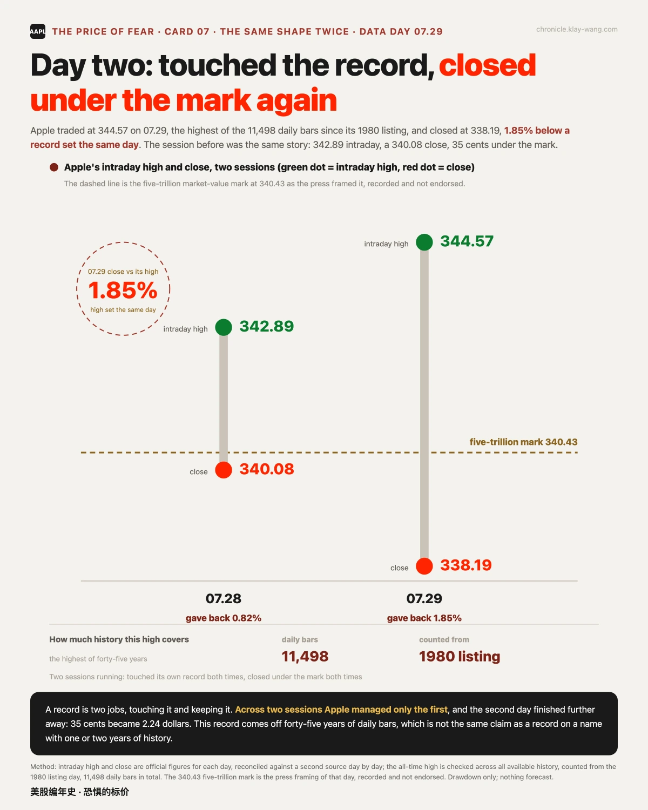
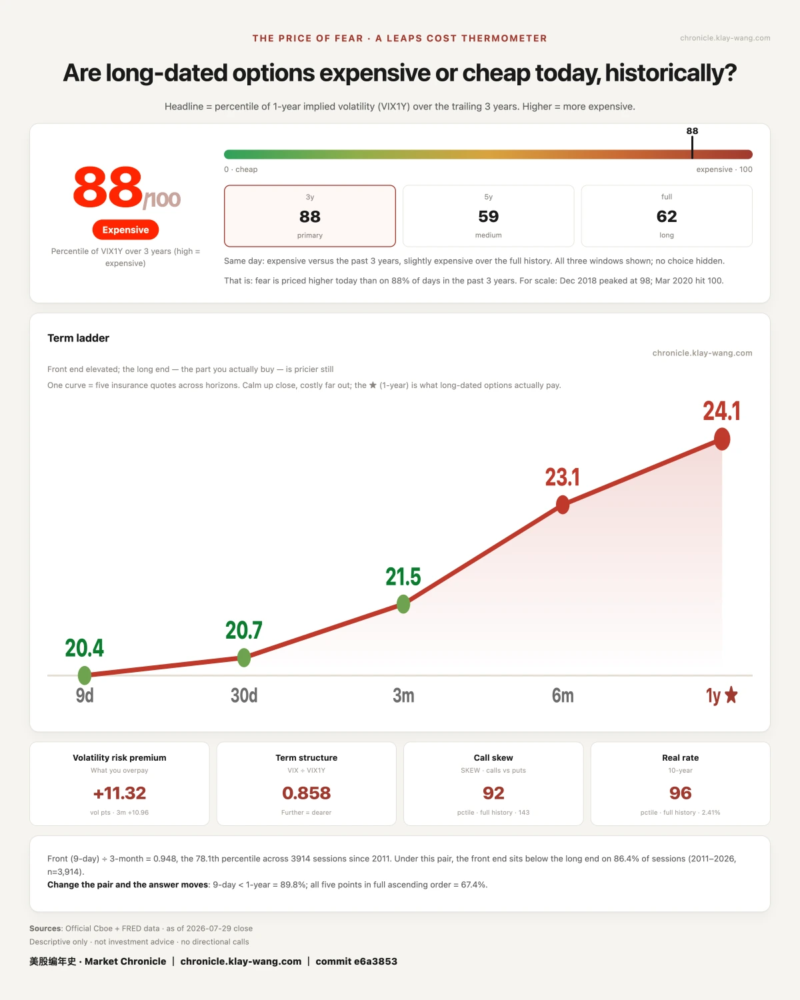
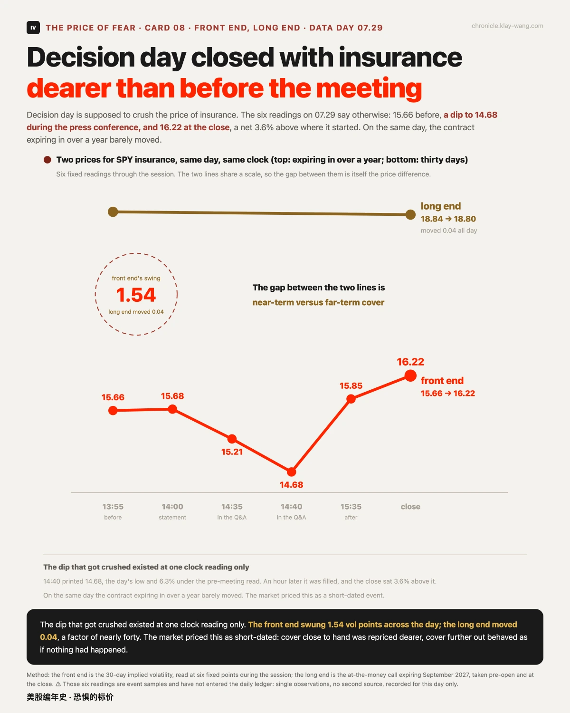

美联储要加息？微软说：接着花，还要多花· 07-29 · 7.27-7.31
• Decision day, clean sweep: rates held but the vote was 9 to 3 with three dissents for a hike; all 17 names topped out inside one afternoon hour, and only Alphabet's two share classes closed green
• Fences breached both ways: the pre-printed earnings fences broke, Microsoft +7.82% out the top, Meta −7.89% out the bottom
• Insurance jumped 15.1 places in a day: the thermometer went 73 to 88/100, a jump beaten only 5 times in three years, while cover expiring in 2027 moved 0.04 all day
📉 The hour when everything topped out
In one line: the turning point was not the decision but the hour after it, and the whole field turned together.
The Fed held at 3.5% to 3.75%, but the vote was 9 to 3, with Hammack, Kashkari and Logan dissenting in favour of a quarter-point hike (per CNBC, Yahoo Finance). At the press conference Warsh put it plainly: no soft inflation target (per Motley Fool). The 30-year Treasury yield touched its highest since 2007.
The tape took a full hour to digest that. SPY ground down to 732.02 in the morning, recovered, kept climbing after the 14:30 press conference began, printed the day's high of 742.68 at 14:45, then never looked back, closing 729.46 with the session low in the final 15 minutes on the day's heaviest bar. Measure all 17 names from their own afternoon highs: all 17 fell, not one held, and every high landed inside the 14:00 to 15:00 hour. The median gave back 3.14%; SanDisk, the deepest, 9.68%. Even Alphabet's two share classes, the day's only gainers, fell from their afternoon highs. Pre-open, the 17 sat inside 2.37 percentage points and 13 were green; by the close they spanned 10.89 and 16 of 17 had swapped places. The split was made during that hour, not before the open.
🚧 Fences breached, both ways
In one line: the market priced its own fences and then walked through both of them.
Last issue printed four fences to the 0731 expiry as quoted: Microsoft ±6.17%, Meta ±6.98%, Amazon ±5.89%, Apple ±3.35%. That evening Microsoft posted $90.01B revenue with Azure at 43% against roughly 40% expected, and traded +7.82% against the anchor; Meta traded −7.89% (per CNBC, Investing.com). One out the top, one out the bottom, both wider than the fence. The options market had ranked these two as the dearest insurance in the universe, and they proved dear for good reason, just not dear enough. Two more report after Thursday's close. Settlement is the 07.31 close; we publish the scorecard either way.
📊 Microsoft's 15 billion: gone from the books, not from the ground
In one line: the books read like restraint, the guidance reads like acceleration, and the gap between them is an accounting entry, not a bulldozer.
The easiest number to misread in Microsoft's report: calendar-2026 capex came down from 190 to about 175 billion dollars. The same call gave both reasons: building depreciation lives extended from 15 to 25 years, and more data-centre leases booked as operating rather than finance leases (per CNBC). The 15-billion gap sits in a ledger line. The cash points the other way: 41 billion spent this quarter, up seventy percent, fiscal-2027 guidance at 255 to 260 billion, and next fiscal year opens above 50 billion in a single quarter, with roughly two-thirds of it going to short-lived assets such as CPUs and GPUs. The buyer's order book did not shrink. One caution: 190 and 175 are calendar 2026, 255 to 260 is fiscal 2027; we set them side by side for direction and subtract nothing.
💾 Memory, day three: the trigger changed hands
In one line: this leg of the memory slide was pulled by the sellers' own expansion budgets, not the buyers.
Memory led the tape down a third day: Micron −9.94%, SanDisk −7.32%, two-day runs of −17.91% and −20.53%. On the underwater chart, none of the five lines has surfaced in thirteen sessions, and SanDisk's drawdown from its post-listing high reached 56.9%. The trigger: SK Hynix delivered record operating profit, up 557% at a 76% margin, and still missed; more important, it raised 2026 capex by 50% to at least 31 billion dollars, read as an overheating supply cycle (per 24/7 Wall St, Yahoo Finance). The same day, Microsoft raised next year's buying budget to 255 billion and rose 7% after hours. The same act, raising capex: the buyer gets rewarded, the seller gets punished. The Philadelphia Semiconductor Index is down 19% in July, its worst month since 2008. What broke is not the demand story; it is the supply-discipline story. Why the other circulating explanation, insider selling, does not hold is in the section below.
🃏 Three from the side table
In one line: one bet lived or died on five dollars, one giant touched its record twice without keeping it, and one circulating explanation does not hold.
The 0DTE blade. When SPY pushed to 742.68, the same-day puts were pennies; sixty minutes later it closed 729.46. On one ladder, the 730 went 0.02 to 1.81, ninety times, while the 725 expired worthless because the session low of 729.10 never breached it. Right on direction, one strike off, and the answer is zero.
Apple, day two. 344.57 intraday on 07.29, the highest of 11498 daily bars since the 1980 listing; closed 338.19, 1.85% under a record set the same day. The prior session was the same shape: touched 342.89, closed 35 cents under the mark. Day two ended further away: 35 cents became 2.24 dollars. A record is two jobs, touching and keeping. Both days managed only the first.
A number that explains nothing. Through the memory slide another explanation has been circulating: insider selling. Micron's CEO sold 40000 shares on 07.24, about 37.29 million dollars. Back at the filings, it was two Form 4s, 31285 shares between 906.48 and 941.60 and 8715 between 942.73 and 965.85, leaving 607075 shares held indirectly through a trust, and all of it executed under a pre-arranged plan adopted on 2026.01.30 (per SEC Form 4, via Investing.com and StockTitan). The schedule was fixed six months before this week's tape. Worth doing the arithmetic: the average sale price of roughly 932 dollars sits 26% above the 07.29 close of 739. It reads like perfect timing; the plan was signed in January. Against this ledger's own bar it does not qualify as an explanation: 40000 shares is about one thousandth of a single day's volume in Micron, and a pre-arranged plan executing on schedule is the base rate, not an event. It is not the cause of this leg; the cause is in the section above, on the sellers' expansion budgets.
🌡 Thermometer: 88 / 100, up 15.1 places in a day
Decision day is supposed to crush the price of insurance. This one lifted it: VIX 1Y closed at 24.09, the 88th percentile of the past three years (59th of five, 62nd of all history), a one-day jump of 15.1 places, the 48th largest of 4667 comparable sessions, beaten only 5 times in three years. The six intraday readings show how: 15.66 before the meeting, a dip to 14.68 during the press conference, filled within the hour, 16.22 at the close, net +3.6%. And the contract expiring in September 2027 moved 0.04 all day. The front end swung 1.54 vol points; the long end priced it as if nothing had happened. The market called this a short-dated event: what got repriced is the near-term cost of money, not the far story.
```







No investment advice. No direction calls. No market timing.